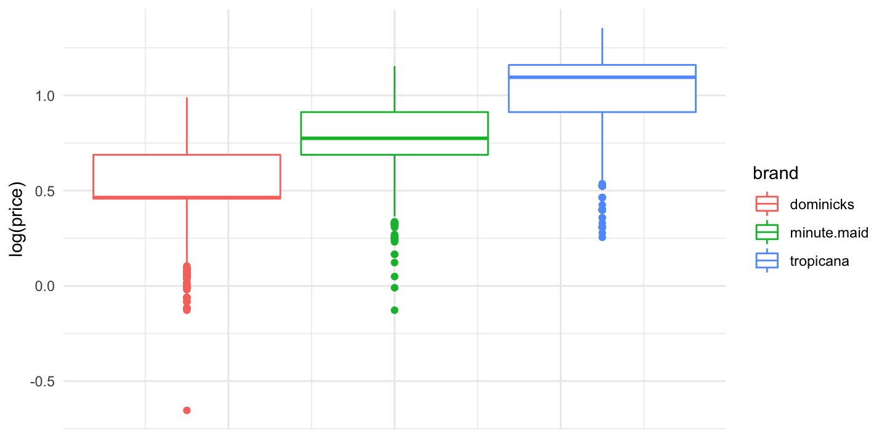
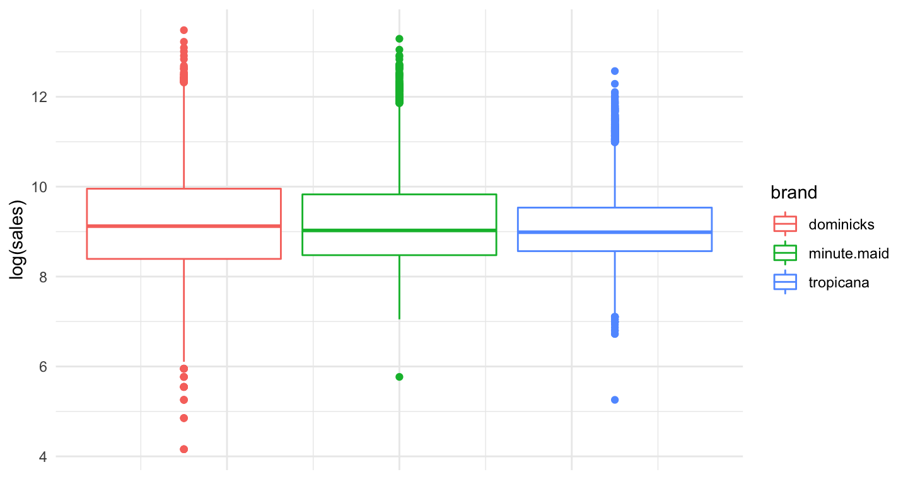
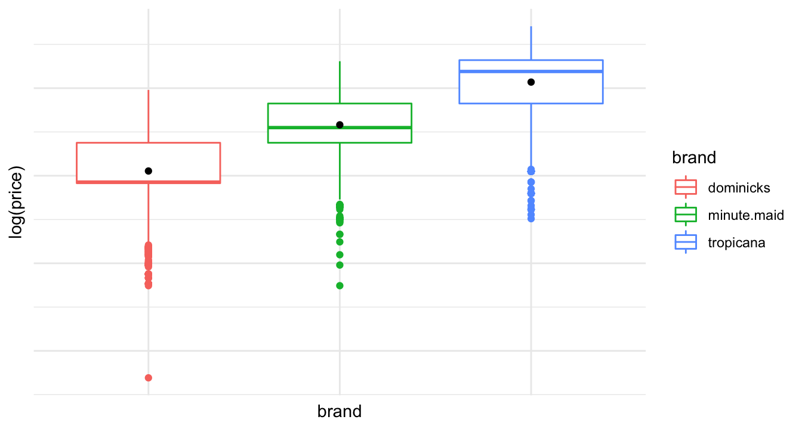
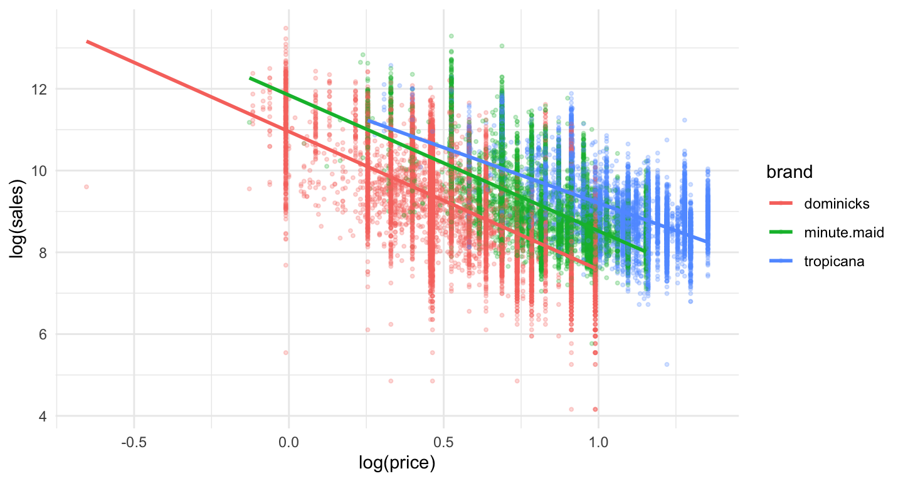
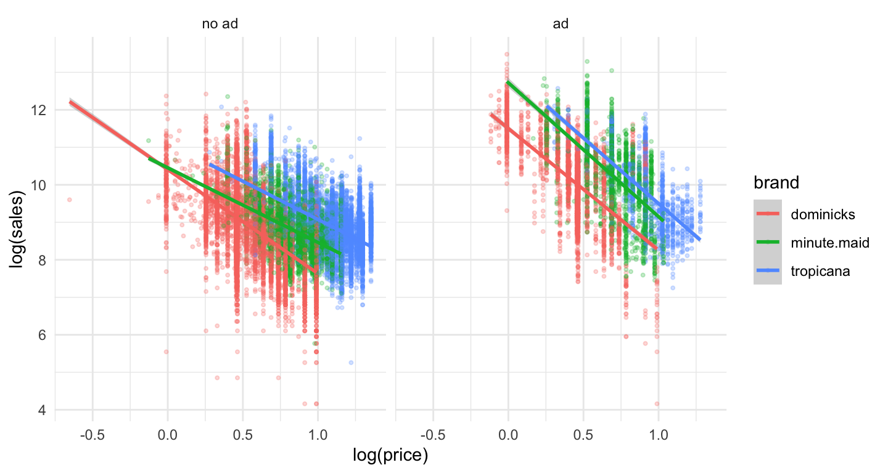
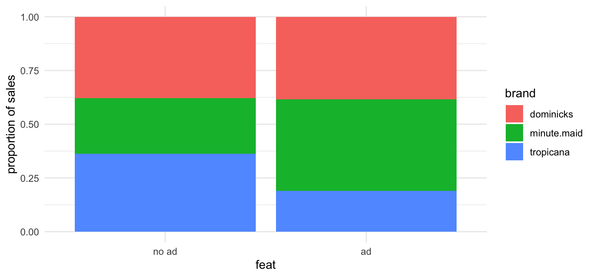
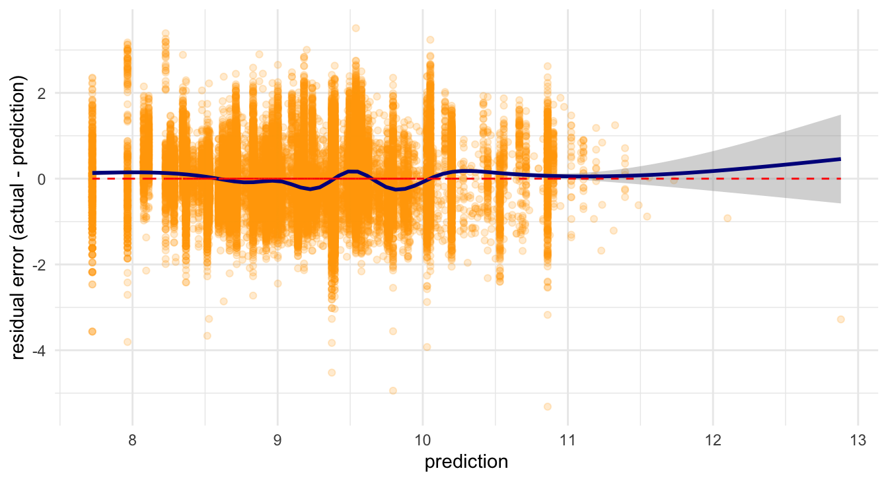
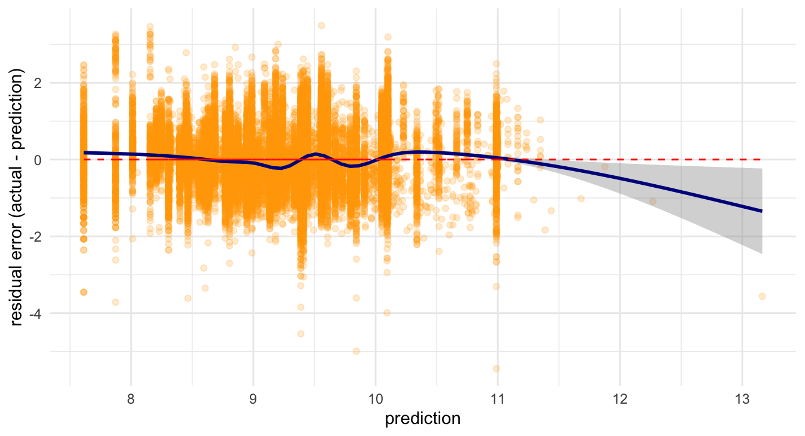

February 4, 2022
Estimating Price Elasticity of Orange Juice Demand
Price elasticity of demand
- Price elasticity of demand measures how sensitive the quantity demanded is to its price.
The concept of elasticity will play an important role in industries.
- Marketers need to understand how consumers are sensitive to fluctuations in price.
Loading R packages and orange juice data
library(tidyverse) # ggplot and more theme_set(theme_minimal()) # minimal theme for ggplot library(skimr) # a better summary of data library(stargazer) # regression tables library(moderndive) # geom_parallel_slopes() oj <- read.table( 'https://bcecon.github.io/dominick_oj.csv', sep = ',', header = TRUE, stringsAsFactor = TRUE )
- We will use weekly sales data for orange juice (OJ) from Dominick’s grocery stores in the 1990s.
Descriptive statistics
OJ data
head(oj)
## sales price brand feat ## 1 8256 3.87 tropicana 0 ## 2 6144 3.87 tropicana 0 ## 3 3840 3.87 tropicana 0 ## 4 8000 3.87 tropicana 0 ## 5 8896 3.87 tropicana 0 ## 6 7168 3.87 tropicana 0
levels(oj$brand)
## [1] "dominicks" "minute.maid" "tropicana"
Descriptive statistics
knitr::kable(skimmed_chr, "simple") # from skimr::skim()
| Variable | n_missing | n_Categories | Counts |
|---|---|---|---|
| brand | 0 | 3 | dominicks: 9649, minute.maid: 9649, tropicana: 9649 |
knitr::kable(skimmed_numeric, "simple") # from skimr::skim()
| Variable | n_missing | Mean | SD | Min | Q1 | Median | Q3 | Max | Hist |
|---|---|---|---|---|---|---|---|---|---|
| sales | 0 | 17312.21 | 27477.66 | 64.00 | 4864.00 | 8384.00 | 17408.00 | 716416.00 | ▇▁▁▁▁ |
| price | 0 | 2.28 | 0.65 | 0.52 | 1.79 | 2.17 | 2.73 | 3.87 | ▁▆▇▅▂ |
| feat | 0 | 0.24 | 0.43 | 0.00 | 0.00 | 0.00 | 0.00 | 1.00 | ▇▁▁▁▂ |
Visualizing OJ data
Distribution of OJ prices
- It is better to use a logarithmic scale when percent change matters.
ggplot(data = oj) + geom_boxplot( aes( y = log(price), color = brand )) + theme(axis.text.x = element_blank(), axis.ticks = element_blank())

Distribution of OJ sales
ggplot(data = oj) + geom_boxplot( aes( y = log(sales), color = brand )) + theme(axis.text.x = element_blank(), axis.ticks = element_blank())

Supply and demand for OJ
ggplot(data = oj, aes( x = log(price), y = log(sales),
color = brand )) +
geom_point( alpha = .25 )

Regression models
Regression model with brand dummies
- The regression model for price elasticity of OJ demand can be written as:
- Here \(\alpha_{\texttt{brand}}\) is shorthand for a separate indicator for each OJ brand:
- Here \(\beta\) measures the price elasticity of OJ demand:
Run the model
reg_oj1 <- lm(log(sales) ~ log(price) + brand,
data=oj)
stargazer(reg_oj1, type = "html", omit = c("Constant"))
Run the model
| Dependent variable: | |
| log(sales) | |
| log(price) | -3.139*** |
| (0.023) | |
| brandminute.maid | 0.870*** |
| (0.013) | |
| brandtropicana | 1.530*** |
| (0.016) | |
| Observations | 28,947 |
| R2 | 0.394 |
| Adjusted R2 | 0.394 |
| Residual Std. Error | 0.794 (df = 28943) |
| F Statistic | 6,275.074*** (df = 3; 28943) |
| Note: | p<0.1; p<0.05; p<0.01 |
Regression lines
ggplot(data = oj, aes(x = log(price), y = log(sales),
color = brand )) +
geom_point(size = .75, alpha = 0.25) +
geom_parallel_slopes()

Regerssion model with interaction terms
- How does consumer price sensitivity change across brands?
- The new regression model can be written as:
- Here \(\beta_{\texttt{brand}}\) is shorthand for the brand-specific price elasticity:
Run the model
reg_oj2 <- lm(log(sales) ~ log(price)*brand,
data=oj)
stargazer(reg_oj1, reg_oj2, type = "html", omit = c("Constant"))
Result
| Dependent variable: | ||
| log(sales) | ||
| (1) | (2) | |
| log(price) | -3.139*** | -3.378*** |
| (0.023) | (0.036) | |
| brandminute.maid | 0.870*** | 0.888*** |
| (0.013) | (0.042) | |
| brandtropicana | 1.530*** | 0.962*** |
| (0.016) | (0.046) | |
| log(price):brandminute.maid | 0.057 | |
| (0.057) | ||
| log(price):brandtropicana | 0.666*** | |
| (0.054) | ||
| Observations | 28,947 | 28,947 |
| R2 | 0.394 | 0.398 |
| Adjusted R2 | 0.394 | 0.398 |
| Residual Std. Error | 0.794 (df = 28943) | 0.791 (df = 28941) |
| F Statistic | 6,275.074*** (df = 3; 28943) | 3,823.404*** (df = 5; 28941) |
| Note: | p<0.1; p<0.05; p<0.01 | |
Regression lines
ggplot(data = oj, aes(x = log(price), y = log(sales),
color = brand )) +
geom_point(size = .75, alpha = 0.25) +
geom_smooth(method = lm, se=FALSE)

Advertisement effect
How does consumer price sensitivity change with advertisement?
- In a brand-specific manner?
- The new regression model can be written as:
- Here \(\beta_{\texttt{brand}}\) measures the brand-feat-specific price elasticity:
Run the model
reg_oj3 <- lm(log(sales) ~ log(price)*brand*feat,
data=oj)
stargazer(reg_oj1, reg_oj2, reg_oj3, type = "html", omit = c("Constant"))
Result
| Dependent variable: | |||
| log(sales) | |||
| (1) | (2) | (3) | |
| log(price) | -3.139*** | -3.378*** | -2.774*** |
| (0.023) | (0.036) | (0.039) | |
| brandminute.maid | 0.870*** | 0.888*** | 0.047 |
| (0.013) | (0.042) | (0.047) | |
| brandtropicana | 1.530*** | 0.962*** | 0.708*** |
| (0.016) | (0.046) | (0.051) | |
| feat | 1.094*** | ||
| (0.038) | |||
| log(price):brandminute.maid | 0.057 | 0.783*** | |
| (0.057) | (0.061) | ||
| log(price):brandtropicana | 0.666*** | 0.736*** | |
| (0.054) | (0.057) | ||
| log(price):feat | -0.471*** | ||
| (0.074) | |||
| brandminute.maid:feat | 1.173*** | ||
| (0.082) | |||
| brandtropicana:feat | 0.785*** | ||
| (0.099) | |||
| log(price):brandminute.maid:feat | -1.109*** | ||
| (0.122) | |||
| log(price):brandtropicana:feat | -0.986*** | ||
| (0.124) | |||
| Observations | 28,947 | 28,947 | 28,947 |
| R2 | 0.394 | 0.398 | 0.535 |
| Adjusted R2 | 0.394 | 0.398 | 0.535 |
| Residual Std. Error | 0.794 (df = 28943) | 0.791 (df = 28941) | 0.695 (df = 28935) |
| F Statistic | 6,275.074*** (df = 3; 28943) | 3,823.404*** (df = 5; 28941) | 3,031.232*** (df = 11; 28935) |
| Note: | p<0.1; p<0.05; p<0.01 | ||
Regression lines
ggplot(data = oj, aes(x = log(price), y = log(sales), color = brand )) + geom_point(size = .75, alpha = 0.25) + geom_smooth(method=lm) + facet_grid( . ~ feat, labeller = as_labeller(feat_names))

Price elasticities of OJ
| dominicks | minute.maid | tropicana | |
|---|---|---|---|
| Model 1 | -3.1 | -3.1 | -3.1 |
| Model 2 | -3.4 | -3.3 | -2.7 |
| Model 3 w/ no ad | -2.8 | -2.0 | -2.0 |
| Model 3 w/ ad | -3.2 | -3.6 | -3.5 |
Which model is better?
Which model is more realistic?
Why does being featured always lead to more price sensitivity?
The relationship between ad and brand
ggplot(data = salestable) +
geom_bar(mapping = aes(x = factor(feat), y = sales_prop,
fill = brand), stat = "identity") +
xlab("feat") + ylab("proportion of sales") +
scale_x_discrete(breaks=c(0, 1), labels=c("no ad", "ad"))

Residual plot and model fit
Which model is better?
On average, are the predictions correct?
Are there systematic errors in prediction?
Residual plot for model 1
# Residual plot 1
ggplot(data = oj, aes(x = predLogSales1, y = log(sales) - predLogSales1 )) +
geom_point(alpha = 0.2, color = "orange") + geom_smooth(color = "darkblue") +
geom_line(aes(x = predLogSales1, y = 0), color = "red", linetype = 2) +
xlab("prediction") + ylab("residual error (actual - prediction)")

Residual plot for model 2
# Residual plot 2
ggplot(data = oj, aes(x = predLogSales2, y = log(sales) - predLogSales2 )) +
geom_point(alpha = 0.2, color = "orange") + geom_smooth(color = "darkblue") +
geom_line(aes(x = predLogSales2, y = 0), color = "red", linetype = 2) +
xlab("prediction") + ylab("residual error (actual - prediction)")
Residual plot for model 3
# Residual plot 3
ggplot(data = oj, aes(x = predLogSales3, y = log(sales) - predLogSales3 )) +
geom_point(alpha = 0.2, color = "orange") + geom_smooth(color = "darkblue") +
geom_line(aes(x = predLogSales3, y = 0), color = "red", linetype = 2) +
xlab("prediction") + ylab("residual error (actual - prediction)")
